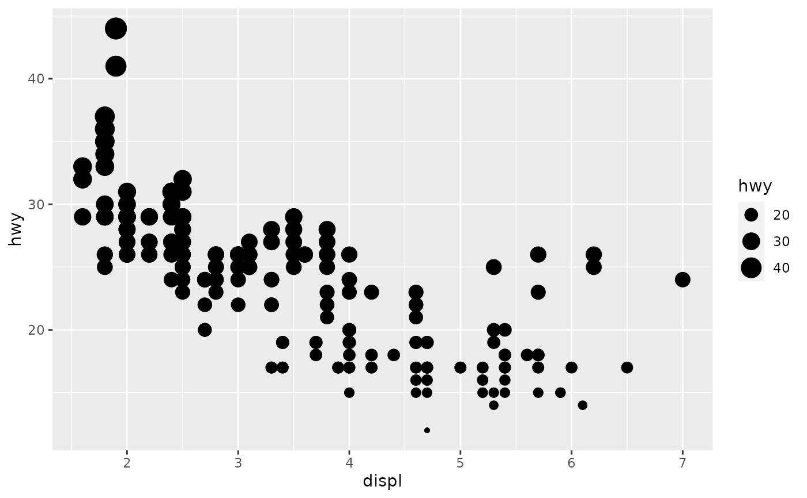
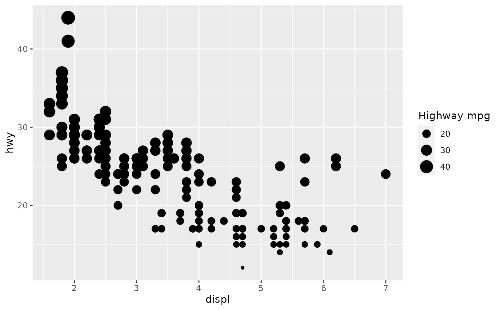
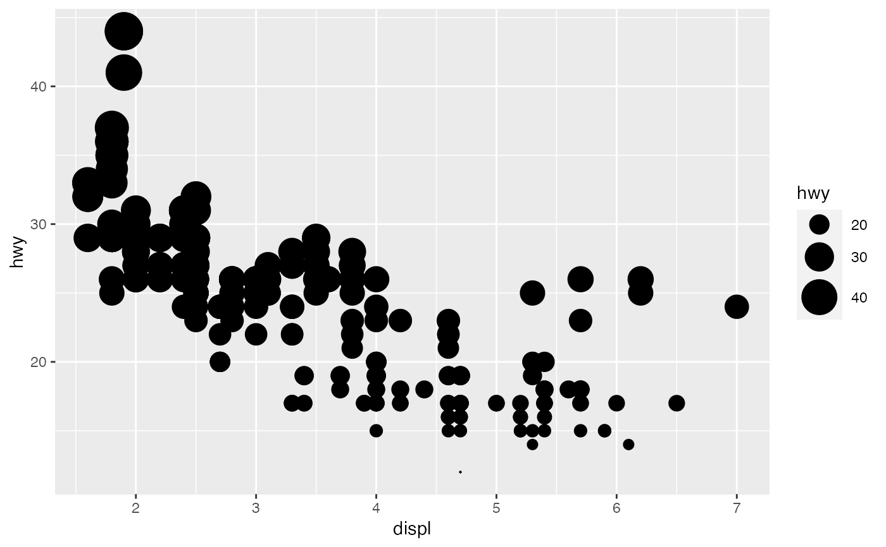
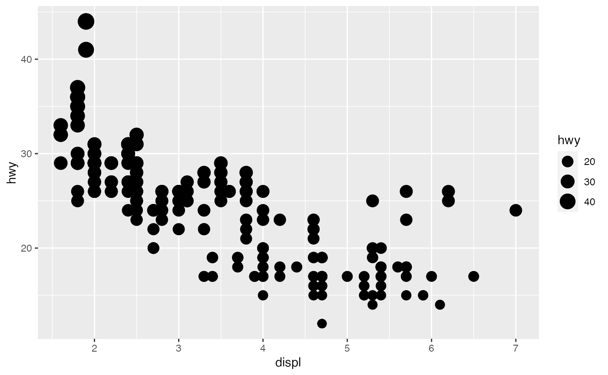
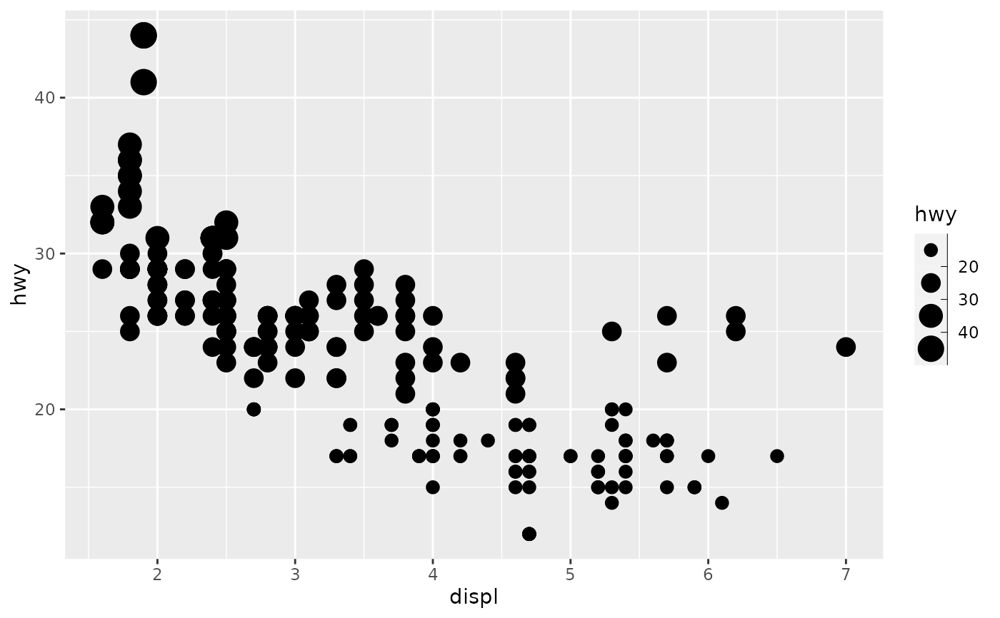
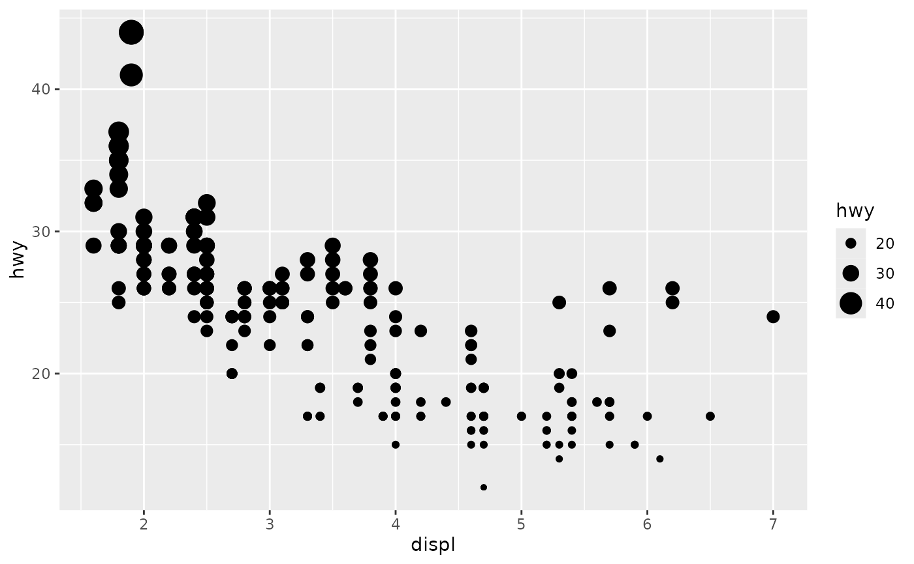

scale_size() scales area, scale_radius() scales radius. The size
aesthetic is most commonly used for points and text, and humans perceive
the area of points (not their radius), so this provides for optimal
perception. scale_size_area() ensures that a value of 0 is mapped
to a size of 0. scale_size_binned() is a binned version of scale_size() that
scales by area (but does not ensure 0 equals an area of zero). For a binned
equivalent of scale_size_area() use scale_size_binned_area().
Usage
scale_size(
name = waiver(),
breaks = waiver(),
labels = waiver(),
limits = NULL,
range = c(1, 6),
transform = "identity",
trans = deprecated(),
guide = "legend"
)
scale_radius(
name = waiver(),
breaks = waiver(),
labels = waiver(),
limits = NULL,
range = c(1, 6),
transform = "identity",
trans = deprecated(),
guide = "legend"
)
scale_size_binned(
name = waiver(),
breaks = waiver(),
labels = waiver(),
limits = NULL,
range = c(1, 6),
n.breaks = NULL,
nice.breaks = TRUE,
transform = "identity",
trans = deprecated(),
guide = "bins"
)
scale_size_area(name = waiver(), ..., max_size = 6)
scale_size_binned_area(name = waiver(), ..., max_size = 6)Arguments
- name
The name of the scale. Used as the axis or legend title. If
waiver(), the default, the name of the scale is taken from the first mapping used for that aesthetic. IfNULL, the legend title will be omitted.- breaks
One of:
NULLfor no breakswaiver()for the default breaks computed by the transformation objectA numeric vector of positions
A function that takes the limits as input and returns breaks as output (e.g., a function returned by
scales::extended_breaks()). Note that for position scales, limits are provided after scale expansion. Also accepts rlang lambda function notation.
- labels
One of:
NULLfor no labelswaiver()for the default labels computed by the transformation objectA character vector giving labels (must be same length as
breaks)An expression vector (must be the same length as breaks). See ?plotmath for details.
A function that takes the breaks as input and returns labels as output. Also accepts rlang lambda function notation.
- limits
One of:
NULLto use the default scale rangeA numeric vector of length two providing limits of the scale. Use
NAto refer to the existing minimum or maximumA function that accepts the existing (automatic) limits and returns new limits. Also accepts rlang lambda function notation. Note that setting limits on positional scales will remove data outside of the limits. If the purpose is to zoom, use the limit argument in the coordinate system (see
coord_cartesian()).
- range
a numeric vector of length 2 that specifies the minimum and maximum size of the plotting symbol after transformation.
- transform
For continuous scales, the name of a transformation object or the object itself. Built-in transformations include "asn", "atanh", "boxcox", "date", "exp", "hms", "identity", "log", "log10", "log1p", "log2", "logit", "modulus", "probability", "probit", "pseudo_log", "reciprocal", "reverse", "sqrt" and "time".
A transformation object bundles together a transform, its inverse, and methods for generating breaks and labels. Transformation objects are defined in the scales package, and are called
transform_<name>. If transformations require arguments, you can call them from the scales package, e.g.scales::transform_boxcox(p = 2). You can create your own transformation withscales::new_transform().- trans
![[Deprecated]](figures/lifecycle-deprecated.svg) Deprecated in favour of
Deprecated in favour of
transform.- guide
A function used to create a guide or its name. See
guides()for more information.- n.breaks
An integer guiding the number of major breaks. The algorithm may choose a slightly different number to ensure nice break labels. Will only have an effect if
breaks = waiver(). UseNULLto use the default number of breaks given by the transformation.- nice.breaks
Logical. Should breaks be attempted placed at nice values instead of exactly evenly spaced between the limits. If
TRUE(default) the scale will ask the transformation object to create breaks, and this may result in a different number of breaks than requested. Ignored if breaks are given explicitly.- ...
Arguments passed on to
continuous_scaleminor_breaksOne of:
NULLfor no minor breakswaiver()for the default breaks (none for discrete, one minor break between each major break for continuous)A numeric vector of positions
A function that given the limits returns a vector of minor breaks. Also accepts rlang lambda function notation. When the function has two arguments, it will be given the limits and major break positions.
oobOne of:
Function that handles limits outside of the scale limits (out of bounds). Also accepts rlang lambda function notation.
The default (
scales::censor()) replaces out of bounds values withNA.scales::squish()for squishing out of bounds values into range.scales::squish_infinite()for squishing infinite values into range.
na.valueMissing values will be replaced with this value.
callThe
callused to construct the scale for reporting messages.superThe super class to use for the constructed scale
- max_size
Size of largest points.
Note
Historically the size aesthetic was used for two different things: Scaling the size of object (like points and glyphs) and scaling the width of lines. From ggplot2 3.4.0 the latter has been moved to its own linewidth aesthetic. For backwards compatibility using size is still possible, but it is highly advised to switch to the new linewidth aesthetic for these cases.
See also
scale_size_area() if you want 0 values to be mapped to points with size 0.
scale_linewidth() if you want to scale the width of lines.
The documentation for differentiation related aesthetics.
The size section of the online ggplot2 book.
Examples
p <- ggplot(mpg, aes(displ, hwy, size = hwy)) +
geom_point()
p

p + scale_size("Highway mpg")

p + scale_size(range = c(0, 10))

# If you want zero value to have zero size, use scale_size_area:
p + scale_size_area()

# Binning can sometimes make it easier to match the scaled data to the legend
p + scale_size_binned()

# This is most useful when size is a count
ggplot(mpg, aes(class, cyl)) +
geom_count() +
scale_size_area()
# If you want to map size to radius (usually bad idea), use scale_radius
p + scale_radius()
